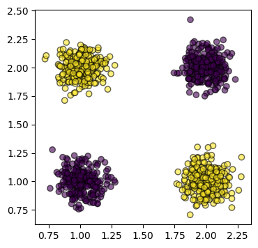

Decision tree
Attraverso gli alberi decisionali è possibile partizionare il dominio dei feature vector in base ai valori delle singole feature (i.e. componenti), e a dei threshold che rappresentano il confine di suddivisione.
Per esempio, dallo spazio con feature vector

si può ricavare un albero simile a:
![]()
Classificazione
Un algoritmo per la costruzione dell'albero è l'algoritmo di Hunt ricorsivo, che prende un dataset :
build_tree(D)
best_split, best_gain = null
for each feature f
for each threshold t
gain = split_goodness(f, t) // Riduzione dell'errore partizionando per (f <= t)
if gain >= best_gain
best_gain = gain
best_split = (f, t)
if best_gain = 0 or other_stopping_criterion
μ = best_prediction(D) // Media/moda delle y di D per regressione/classificazione
return Leaf(μ)
f, t = best_split
L = build_tree(filter(D, x : x[f] <= t))
R = build_tree(filter(D, x : x[f] > t))
return Node(L, R)
Foglie
La best_prediction(D) è definita come la moda delle di , ovvero il label più frequente:
Per semplicità, d'ora in poi si definisce come l'errore della miglior previsione di .
Nodi interni
La qualità del taglio è dato dal guadagno dell'errore che si ha tagliando rispetto a non tagliare: